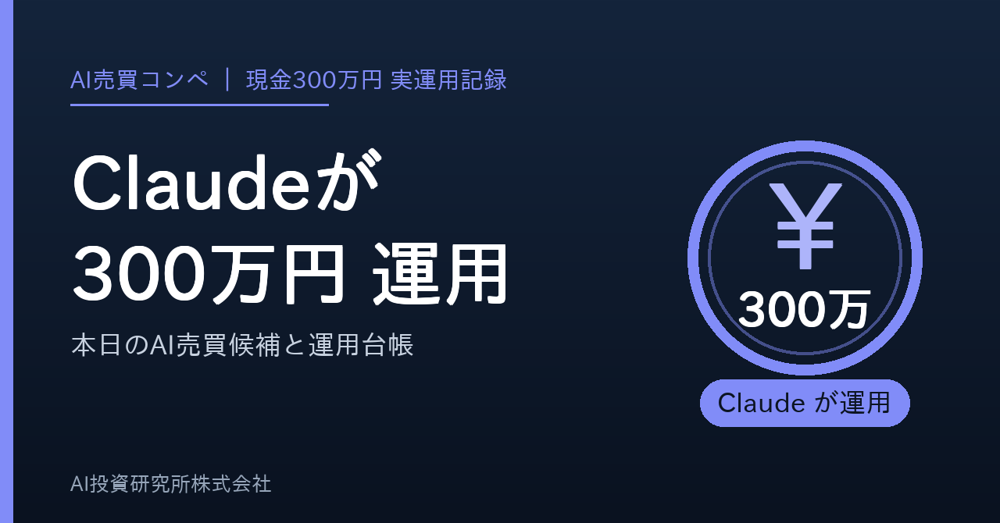
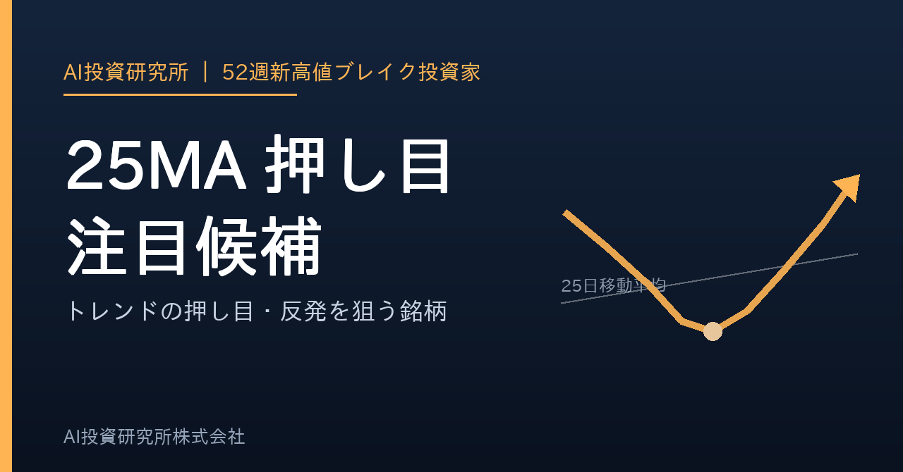
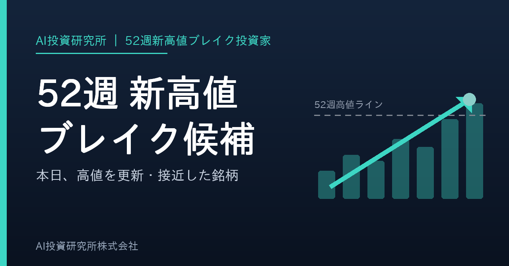

作成: 2026-10-09 00:08 JST ／ ボタンを押すとクリップボードに入ります。noteの新規記事に貼り付けてください。タイトル・本文・タグ・見出し画像を、それぞれ1タップでコピーできます。（ボタンが効かないときは枠の中を長押しして全選択してください）
この本はnote側の下書き保存が未完了です。下のボタンでコピーして、noteの新規記事に貼り付けてください。

ボタンが効かないときは、この画像を長押しして「写真に追加」または「コピー」を選んでください。
ルール：1枠60万円・最大3銘柄 ／ 損切 -5% ／ 利確 +12% ／ 15営業日で手じまい
八十二長野銀行 8359 -41,000円 (-7.1%) 2026-09-28 購入
200株 ／ 取得 @2,881円 → 現在 2,676円
カプコン 9697 -14,800円 (-3.3%) 2026-10-05 購入
100株 ／ 取得 @4,434円 → 現在 4,286円
ＳＨＯＥＩ 7839 +9,600円 (+2.2%) 2026-10-05 購入
200株 ／ 取得 @2,161円 → 現在 2,209円
現金 1,498,500円
出所 claude_300man_journal.csv（実際に約定した記録だけ）
この運用は「チャートの形」と「出来高・売買代金」だけで銘柄を選んでいます。ニュースの中身や業績の予想では買いません。決算は「発表日が確認できているか」だけを見ます。
八十二長野銀行 8359
出来高・規模：売買代金10億円以上・出来高比1.26倍・25日線乖離+5.66%・悪材料ゲート通過
ランク：改善後Claude順張り Sランク・スコア121（S＝85点以上で必須条件すべて / A＝70点以上 / B＝55点以上）
いつ：2026-09-25 に判断 → 2026-09-28 の寄付きで買付
📈 チャート: https://finance.yahoo.co.jp/quote/8359.T/chart
📊 日経平均と比較（PCで開くと重なります）: https://finance.yahoo.co.jp/quote/8359.T/chart?frm=dly&trm=6m&compare=998407.O
👥 OpenWork: https://www.openwork.jp/search.php?src_str=%E5%85%AB%E5%8D%81%E4%BA%8C%E9%95%B7%E9%87%8E%E9%8A%80%E8%A1%8C
カプコン 9697
出来高・規模：25MA押し目+52週押し目・高値距離0.00%・出来高比1.76倍・悪材料ゲート通過
ランク：検証済み押し目Aランク・スコア113（S＝85点以上で必須条件すべて / A＝70点以上 / B＝55点以上）
いつ：2026-10-02 に判断 → 2026-10-05 の寄付きで買付
📈 チャート: https://finance.yahoo.co.jp/quote/9697.T/chart
📊 日経平均と比較（PCで開くと重なります）: https://finance.yahoo.co.jp/quote/9697.T/chart?frm=dly&trm=6m&compare=998407.O
👥 OpenWork: https://www.openwork.jp/search.php?src_str=%E3%82%AB%E3%83%97%E3%82%B3%E3%83%B3
ＳＨＯＥＩ 7839
出来高・規模：25MA押し目+52週押し目・高値距離0.51%・出来高比1.12倍・悪材料ゲート通過
ランク：検証済み押し目Aランク・スコア108（S＝85点以上で必須条件すべて / A＝70点以上 / B＝55点以上）
いつ：2026-10-02 に判断 → 2026-10-05 の寄付きで買付
📈 チャート: https://finance.yahoo.co.jp/quote/7839.T/chart
📊 日経平均と比較（PCで開くと重なります）: https://finance.yahoo.co.jp/quote/7839.T/chart?frm=dly&trm=6m&compare=998407.O
👥 OpenWork: https://www.openwork.jp/search.php?src_str=%EF%BC%B3%EF%BC%A8%EF%BC%AF%EF%BC%A5%EF%BC%A9
手じまい済み
1. 🟢 Sランク 7740 タムロン
📊 スコア 113 💴 1,506円
📝 52週高値3%以内 / MA25上 / MA75上 / MA200上 / MA25上向き / MA75上向き / 52週高値更新3日以内 / 売買代金3億円以上 / 出来高比1.5倍以上 / 100株購入額が資金10%以内
2. 🔵 Aランク 4477 ＢＡＳＥ
📊 スコア 190 💴 373円
📝 52週高値15%以内 / MA25上 / MA75上 / MA200上 / MA25上向き / MA75上向き / 52週高値更新3日以内 / 売買代金3億円以上 / 出来高比2倍以上 / 100株購入額が資金10%以内 / DUKE旧52週高値サポート+85 / Sゲート未達(52週高値3%超・出来高が20日平均以下)で最大A
3. 🔵 Aランク 4419 Ｆｉｎａｔｅｘｔホールディングス
📊 スコア 178 💴 1,483円
📝 52週高値15%以内 / MA25上 / MA75上 / MA200上 / MA25上向き / MA75上向き / 売買代金3億円以上 / 出来高比1.5倍以上 / 100株購入額が資金10%以内 / DUKE旧52週高値サポート+90 / Sゲート未達(52週高値3%超・出来高が20日平均以下)で最大A
4. 🔵 Aランク 4100 戸田工業
📊 スコア 153 💴 1,812円
📝 52週高値15%以内 / MA25上 / MA75上 / MA200上 / MA25上向き / MA75上向き / 売買代金1億円以上 / 100株購入額が資金10%以内 / DUKE旧52週高値サポート+80 / Sゲート未達(52週高値3%超・出来高が20日平均以下)で最大A
5. 🔵 Aランク 8338 筑波銀行
📊 スコア 121 💴 813円
📝 52週高値7%以内 / MA25上 / MA75上 / MA200上 / MA25上向き / MA75上向き / 52週高値更新3日以内 / 売買代金10億円以上 / CWH候補 / テーマ加点:銀行 / 100株購入額が資金10%以内 / Sゲート未達(52週高値3%超・出来高が20日平均以下)で最大A
6. 🔵 Aランク 3040 ソリトンシステムズ
📊 スコア 118 💴 2,915円
📝 52週高値3%以内 / MA25上 / MA75上 / MA200上 / MA25上向き / MA75上向き / 52週高値更新3日以内 / 売買代金3億円以上 / 出来高比2倍以上 / 100株購入額が資金10%以内 / 決算未確認で最大A
7. 🔵 Aランク 6958 日本シイエムケイ
📊 スコア 118 💴 818円
📝 52週高値3%以内 / MA25上 / MA75上 / MA200上 / MA25上向き / MA75上向き / 52週高値更新3日以内 / 売買代金3億円以上 / 出来高増加 / CWH候補 / 100株購入額が資金10%以内 / Sゲート未達(出来高が20日平均以下)で最大A
8. 🔵 Aランク 5208 有沢製作所
📊 スコア 113 💴 2,896円
📝 52週高値3%以内 / MA25上 / MA75上 / MA200上 / MA25上向き / MA75上向き / 52週高値更新3日以内 / 売買代金3億円以上 / CWH候補 / 100株購入額が資金10%以内 / Sゲート未達(出来高が20日平均以下)で最大A
9. 🔵 Aランク 6652 ＩＤＥＣ
📊 スコア 113 💴 4,000円
📝 52週高値7%以内 / MA25上 / MA75上 / MA200上 / MA25上向き / MA75上向き / 52週高値更新3日以内 / 売買代金3億円以上 / 出来高比1.5倍以上 / CWH候補 / 100株購入額が資金20%以内 / Sゲート未達(52週高値3%超・出来高が20日平均以下)で最大A
10. 🔵 Aランク 8388 阿波銀行
📊 スコア 111 💴 2,197円
📝 52週高値7%以内 / MA25上 / MA75上 / MA200上 / MA25上向き / MA75上向き / 52週高値更新3日以内 / 売買代金10億円以上 / テーマ加点:銀行 / 100株購入額が資金10%以内 / Sゲート未達(52週高値3%超・出来高が20日平均以下)で最大A
7740 タムロン ⚡出来高1.84倍
📝 紹介: タムロンは精密機器に属する銘柄で、スクリーニング評価はSランク。出来高1.8倍と商いを伴う動き。MULTI。
現在値: 1,506.0円 / 前日比: -2.6%
売買代金: 7.0億円 / 出来高倍率: 1.84x / 値幅: 3.2%
📊 PER 22.0 / 予想PER 4.6 / PBR 2.73 / 配当 3.12%
💪 ROE 13.2% / 営業利益率 17.1% / 純利益率 12.8%
🚀 売上 +11.4% (前年比) / 利益 -13.9% (前年比)
🗓 決算予定日: 2026-11-05
🏢 時価総額 2,413.4億円 / セクター: 精密機器
📈 チャート: https://finance.yahoo.co.jp/quote/7740.T/chart
📊 日経平均と比較（PCで開くと重なります）: https://finance.yahoo.co.jp/quote/7740.T/chart?frm=dly&trm=6m&compare=998407.O
👥 OpenWork: https://www.openwork.jp/search.php?src_str=%E3%82%BF%E3%83%A0%E3%83%AD%E3%83%B3
4477 ＢＡＳＥ ⚡出来高2.62倍
📝 紹介: ＢＡＳＥは情報・通信業に属する銘柄で、スクリーニング評価はAランク。出来高2.6倍と商いを伴う動き、52週高値まであと2.1%、ROE15%と資本効率も高い。MULTI。
現在値: 373.0円 / 前日比: -3.1%
売買代金: 6.9億円 / 出来高倍率: 2.62x / 値幅: 3.4%
📊 PER 19.6 / 予想PER 44.8 / PBR 2.80 / 配当 2.62%
💪 ROE 15.4% / 営業利益率 6.6% / 純利益率 9.2%
🚀 売上 +34.4% (前年比) / 利益 +1.4% (前年比)
🗓 決算予定日: 2026-11-05
🏢 時価総額 426.1億円 / セクター: 情報・通信業
📈 チャート: https://finance.yahoo.co.jp/quote/4477.T/chart
📊 日経平均と比較（PCで開くと重なります）: https://finance.yahoo.co.jp/quote/4477.T/chart?frm=dly&trm=6m&compare=998407.O
👥 OpenWork: https://www.openwork.jp/search.php?src_str=%EF%BC%A2%EF%BC%A1%EF%BC%B3%EF%BC%A5
4419 Ｆｉｎａｔｅｘｔホールディングス ⚡出来高1.70倍
📝 紹介: Ｆｉｎａｔｅｘｔホールディングスは情報・通信業に属する銘柄で、スクリーニング評価はAランク。出来高1.7倍と商いを伴う動き、52週高値まであと1.8%、ROE17%と資本効率も高い。52W_PULLBACK。
現在値: 1,483.0円 / 前日比: -0.6%
売買代金: 5.8億円 / 出来高倍率: 1.70x / 値幅: 4.7%
📊 PER 52.1 / 予想PER 85.5 / PBR 6.74 / 配当 0.00%
💪 ROE 17.3% / 営業利益率 6.6% / 純利益率 14.5%
🚀 売上 +35.1% (前年比) / 利益 +49.6% (前年比)
🏢 時価総額 775.4億円 / セクター: 情報・通信業
📈 チャート: https://finance.yahoo.co.jp/quote/4419.T/chart
📊 日経平均と比較（PCで開くと重なります）: https://finance.yahoo.co.jp/quote/4419.T/chart?frm=dly&trm=6m&compare=998407.O
※本日はバックテスト未実施のため、実運用トレードの確定実績（trade_history）を記載します。
※これは投資助言ではなく、スクリーニング結果です。売買判断は自己責任で行ってください。
この本はnote側の下書き保存が未完了です。下のボタンでコピーして、noteの新規記事に貼り付けてください。

ボタンが効かないときは、この画像を長押しして「写真に追加」または「コピー」を選んでください。
52週新高値をブレイクした後、ラインまで戻ってきた「リテスト」候補が120銘柄、上昇トレンド（移動平均線が右肩上がり）のまま25/200/240日線にタッチした押し目候補が169銘柄です。
強い銘柄を高値で追いかけるのではなく、強い銘柄が休んだところを狙うのがこの記事のテーマです。移動平均線が上向きのままのタッチだけを拾うので、下落トレンドの「落ちるナイフ」は含みません。
本日の押し目候補を業種別に数えると、銀行業（37銘柄）、機械（26銘柄）、情報・通信業（24銘柄）に集まりました。同じ業種に偏っている日は、その業種の地合いに引きずられやすい点に注意してください。
1332 ニッスイ ⚡出来高0.88倍
📝 紹介: ニッスイは水産・農林業に属する銘柄で、52W_PULLBACK。
現在値: 1,068.5円 / 前日比: -2.2%
売買代金: 20.7億円 / 出来高倍率: 0.88x / 値幅: 3.1%
📊 PER 12.1 / 予想PER 12.2 / PBR 1.07 / 配当 3.07%
💪 ROE 10.3% / 営業利益率 4.8% / 純利益率 3.0%
🚀 売上 +14.1% (前年比) / 利益 +17.2% (前年比)
🗓 決算予定日: 2026-11-06
🏢 時価総額 3,282.9億円 / セクター: 水産・農林業
📈 チャート: https://finance.yahoo.co.jp/quote/1332.T/chart
📊 日経平均と比較（PCで開くと重なります）: https://finance.yahoo.co.jp/quote/1332.T/chart?frm=dly&trm=6m&compare=998407.O
📐 日経平均に対して：1年レンジの下から0%／比率は25日線 -13.3%・200日線 -28.1%／直近20営業日は下向き（-15.5%）。日経平均自体は上向き（+4.6%）。位置を測った数字で、企業価値の評価ではありません。
👥 OpenWork: https://www.openwork.jp/search.php?src_str=%E3%83%8B%E3%83%83%E3%82%B9%E3%82%A4
1333 Ｕｍｉｏｓ ⚡出来高1.20倍
📝 紹介: Ｕｍｉｏｓは水産・農林業に属する銘柄で、52W_PULLBACK。
現在値: 1,188.0円 / 前日比: -0.4%
売買代金: 5.8億円 / 出来高倍率: 1.20x / 値幅: 1.2%
📊 PER 8.1 / 予想PER 4.5 / PBR 0.73 / 配当 4.14%
💪 ROE 8.7% / 営業利益率 2.4% / 純利益率 0.0%
🚀 売上 +5.3% (前年比) / 利益 -47.2% (前年比)
🗓 決算予定日: 2026-11-09
🏢 時価総額 1,802.9億円 / セクター: 水産・農林業
📈 チャート: https://finance.yahoo.co.jp/quote/1333.T/chart
📊 日経平均と比較（PCで開くと重なります）: https://finance.yahoo.co.jp/quote/1333.T/chart?frm=dly&trm=6m&compare=998407.O
📐 日経平均に対して：1年レンジの下から0%／比率は25日線 -10.6%・200日線 -24.0%／直近20営業日は下向き（-10.2%）。日経平均自体は上向き（+4.6%）。位置を測った数字で、企業価値の評価ではありません。
👥 OpenWork: https://www.openwork.jp/search.php?src_str=%EF%BC%B5%EF%BD%8D%EF%BD%89%EF%BD%8F%EF%BD%93
1379 ホクト ⚡出来高0.89倍
📝 紹介: ホクトは水産・農林業に属する銘柄で、52W_PULLBACK。
現在値: 1,986.0円 / 前日比: -0.1%
売買代金: 1.4億円 / 出来高倍率: 0.89x / 値幅: 1.1%
📊 PER 10.4 / PBR 0.97 / 配当 2.75%
💪 ROE 10.0% / 営業利益率 2.2% / 純利益率 7.0%
🚀 売上 +4.4% (前年比) / 利益 -66.8% (前年比)
🏢 時価総額 627.4億円 / セクター: 水産・農林業
📈 チャート: https://finance.yahoo.co.jp/quote/1379.T/chart
📊 日経平均と比較（PCで開くと重なります）: https://finance.yahoo.co.jp/quote/1379.T/chart?frm=dly&trm=6m&compare=998407.O
📐 日経平均に対して：1年レンジの下から17%／比率は25日線 -9.3%・200日線 -12.7%／直近20営業日は下向き（-8.6%）。日経平均自体は上向き（+4.6%）。位置を測った数字で、企業価値の評価ではありません。
👥 OpenWork: https://www.openwork.jp/search.php?src_str=%E3%83%9B%E3%82%AF%E3%83%88
※ この分類の候補は全120件です。上位3件だけカードで掲載しています（全件はメール添付の screening_pullback_*.csv）。
1783 ｆａｎｔａｓｉｓｔａ ⚡出来高0.52倍
📝 紹介: ｆａｎｔａｓｉｓｔａは不動産業に属する銘柄で、25MA_PULLBACK。
現在値: 69.0円 / 前日比: 0.0%
売買代金: 3.3億円 / 出来高倍率: 0.52x / 値幅: 5.7%
📊 PBR 1.75 / 配当 0.00%
💪 ROE -0.3% / 営業利益率 11.0% / 純利益率 -0.8%
🚀 売上 +8.1% (前年比)
🏢 時価総額 135.3億円 / セクター: 不動産業
📈 チャート: https://finance.yahoo.co.jp/quote/1783.T/chart
📊 日経平均と比較（PCで開くと重なります）: https://finance.yahoo.co.jp/quote/1783.T/chart?frm=dly&trm=6m&compare=998407.O
📐 日経平均に対して：1年レンジの下から42%／比率は25日線 -2.7%・200日線 -0.5%／直近20営業日は上向き（+17.8%）。日経平均自体は上向き（+4.6%）。位置を測った数字で、企業価値の評価ではありません。
1945 東京エネシス ⚡出来高0.86倍
📝 紹介: 東京エネシスは建設業に属する銘柄で、25MA_PULLBACK。
現在値: 2,088.0円 / 前日比: -1.3%
売買代金: 2.8億円 / 出来高倍率: 0.86x / 値幅: 2.0%
📊 PER 16.2 / 予想PER 32.3 / PBR 0.96 / 配当 3.68%
💪 ROE 6.2% / 営業利益率 4.7% / 純利益率 5.0%
🚀 売上 +31.6% (前年比) / 利益 +13.4% (前年比)
🏢 時価総額 688.9億円 / セクター: 建設業
📈 チャート: https://finance.yahoo.co.jp/quote/1945.T/chart
📊 日経平均と比較（PCで開くと重なります）: https://finance.yahoo.co.jp/quote/1945.T/chart?frm=dly&trm=6m&compare=998407.O
📐 日経平均に対して：1年レンジの下から10%／比率は25日線 -6.4%・200日線 -9.6%／直近20営業日は下向き（-8.4%）。日経平均自体は上向き（+4.6%）。位置を測った数字で、企業価値の評価ではありません。
👥 OpenWork: https://www.openwork.jp/search.php?src_str=%E6%9D%B1%E4%BA%AC%E3%82%A8%E3%83%8D%E3%82%B7%E3%82%B9
1961 三機工業 ⚡出来高0.85倍
📝 紹介: 三機工業は建設業に属する銘柄で、ROE24%と資本効率も高い。25MA_PULLBACK。
現在値: 2,585.0円 / 前日比: -1.5%
売買代金: 12.3億円 / 出来高倍率: 0.85x / 値幅: 3.4%
📊 PER 50.6 / 予想PER 11.3 / PBR 3.33 / 配当 2.66%
💪 ROE 23.7% / 営業利益率 8.6% / 純利益率 10.2%
🚀 売上 +7.4% (前年比) / 利益 +1.5% (前年比)
🏢 時価総額 3,950.1億円 / セクター: 建設業
📈 チャート: https://finance.yahoo.co.jp/quote/1961.T/chart
📊 日経平均と比較（PCで開くと重なります）: https://finance.yahoo.co.jp/quote/1961.T/chart?frm=dly&trm=6m&compare=998407.O
📐 日経平均に対して：1年レンジの下から34%／比率は25日線 -1.9%・200日線 -6.3%／直近20営業日は横ばい（-0.1%）。日経平均自体は上向き（+4.6%）。位置を測った数字で、企業価値の評価ではありません。
👥 OpenWork: https://www.openwork.jp/search.php?src_str=%E4%B8%89%E6%A9%9F%E5%B7%A5%E6%A5%AD
※ この分類の候補は全136件です。上位3件だけカードで掲載しています（全件はメール添付の screening_pullback_*.csv）。
3104 富士紡ホールディングス ⚡出来高1.23倍
📝 紹介: 富士紡ホールディングスは繊維製品に属する銘柄で、200MA_TOUCH。
現在値: 3,625.0円 / 前日比: -2.4%
売買代金: 5.0億円 / 出来高倍率: 1.23x / 値幅: 2.4%
📊 PER 21.9 / 予想PER 9.3 / PBR 2.33 / 配当 2.07%
💪 ROE 11.7% / 営業利益率 18.8% / 純利益率 12.3%
🚀 売上 +17.1% (前年比) / 利益 +18.6% (前年比)
🏢 時価総額 1,222.3億円 / セクター: 繊維製品
📈 チャート: https://finance.yahoo.co.jp/quote/3104.T/chart
📊 日経平均と比較（PCで開くと重なります）: https://finance.yahoo.co.jp/quote/3104.T/chart?frm=dly&trm=6m&compare=998407.O
📐 日経平均に対して：1年レンジの下から30%／比率は25日線 +2.6%・200日線 -11.3%／直近20営業日は上向き（+2.2%）。日経平均自体は上向き（+4.6%）。位置を測った数字で、企業価値の評価ではありません。
4187 大阪有機化学工業 ⚡出来高1.08倍
📝 紹介: 大阪有機化学工業は化学に属する銘柄で、ROE16%と資本効率も高い、利益成長+65%と業績も追い風。200MA_TOUCH。
現在値: 4,630.0円 / 前日比: -1.2%
売買代金: 5.8億円 / 出来高倍率: 1.08x / 値幅: 2.8%
📊 PER 12.1 / 予想PER 26.7 / PBR 1.74 / 配当 1.83%
💪 ROE 15.9% / 営業利益率 23.6% / 純利益率 20.2%
🚀 売上 +23.4% (前年比) / 利益 +64.6% (前年比)
🏢 時価総額 943.6億円 / セクター: 化学
📈 チャート: https://finance.yahoo.co.jp/quote/4187.T/chart
📊 日経平均と比較（PCで開くと重なります）: https://finance.yahoo.co.jp/quote/4187.T/chart?frm=dly&trm=6m&compare=998407.O
📐 日経平均に対して：1年レンジの下から16%／比率は25日線 +2.6%・200日線 -11.7%／直近20営業日は横ばい（+0.8%）。日経平均自体は上向き（+4.6%）。位置を測った数字で、企業価値の評価ではありません。
4259 エクサウィザーズ ⚡出来高0.86倍
📝 紹介: エクサウィザーズは情報・通信業に属する銘柄で、ROE24%と資本効率も高い。200MA_TOUCH。
現在値: 809.0円 / 前日比: -2.4%
売買代金: 8.7億円 / 出来高倍率: 0.86x / 値幅: 3.8%
📊 PER 44.2 / 予想PER 250.3 / PBR 7.51 / 配当 1.20%
💪 ROE 23.8% / 営業利益率 5.8% / 純利益率 12.0%
🚀 売上 +41.0% (前年比) / 利益 +15.4% (前年比)
🏢 時価総額 762.2億円 / セクター: 情報・通信業
📈 チャート: https://finance.yahoo.co.jp/quote/4259.T/chart
📊 日経平均と比較（PCで開くと重なります）: https://finance.yahoo.co.jp/quote/4259.T/chart?frm=dly&trm=6m&compare=998407.O
📐 日経平均に対して：1年レンジの下から14%／比率は25日線 -9.9%・200日線 -10.4%／直近20営業日は下向き（-11.1%）。日経平均自体は上向き（+4.6%）。位置を測った数字で、企業価値の評価ではありません。
※ この分類の候補は全19件です。上位3件だけカードで掲載しています（全件はメール添付の screening_pullback_*.csv）。
3110 日東紡績 ⚡出来高1.10倍
📝 紹介: 日東紡績はガラス・土石製品に属する銘柄で、ROE28%と資本効率も高い、利益成長+84%と業績も追い風。WATCH。
現在値: 3,530.0円 / 前日比: -4.1%
売買代金: 147.6億円 / 出来高倍率: 1.10x / 値幅: 4.5%
📊 PER 15.4 / 予想PER 11.9 / PBR 3.62
💪 ROE 28.4% / 営業利益率 23.3% / 純利益率 35.8%
🚀 売上 +20.6% (前年比) / 利益 +84.2% (前年比)
🗓 決算予定日: 2026-11-05
🏢 時価総額 6,416.4億円 / セクター: ガラス・土石製品
📈 チャート: https://finance.yahoo.co.jp/quote/3110.T/chart
📊 日経平均と比較（PCで開くと重なります）: https://finance.yahoo.co.jp/quote/3110.T/chart?frm=dly&trm=6m&compare=998407.O
📐 日経平均に対して：1年レンジの下から31%／比率は25日線 +7.8%・200日線 -18.1%／直近20営業日は上向き（+8.4%）。日経平均自体は上向き（+4.6%）。位置を測った数字で、企業価値の評価ではありません。
👥 OpenWork: https://www.openwork.jp/search.php?src_str=%E6%97%A5%E6%9D%B1%E7%B4%A1%E7%B8%BE
4063 信越化学工業 ⚡出来高0.82倍
📝 紹介: 信越化学工業は化学に属する銘柄で、WATCH。
現在値: 6,154.0円 / 前日比: -1.8%
売買代金: 387.8億円 / 出来高倍率: 0.82x / 値幅: 1.3%
📊 PER 24.2 / 予想PER 18.6 / PBR 2.50 / 配当 1.84%
💪 ROE 11.2% / 営業利益率 26.2% / 純利益率 18.4%
🚀 売上 +5.4% (前年比) / 利益 +5.7% (前年比)
🗓 決算予定日: 2026-10-27
🏢 時価総額 111,100.1億円 / セクター: 化学
📈 チャート: https://finance.yahoo.co.jp/quote/4063.T/chart
📊 日経平均と比較（PCで開くと重なります）: https://finance.yahoo.co.jp/quote/4063.T/chart?frm=dly&trm=6m&compare=998407.O
📐 日経平均に対して：1年レンジの下から4%／比率は25日線 -0.6%・200日線 -14.4%／直近20営業日は上向き（+1.1%）。日経平均自体は上向き（+4.6%）。位置を測った数字で、企業価値の評価ではありません。
👥 OpenWork: https://www.openwork.jp/search.php?src_str=%E4%BF%A1%E8%B6%8A%E5%8C%96%E5%AD%A6%E5%B7%A5%E6%A5%AD
4109 ステラ ケミファ ⚡出来高1.10倍 🔁 25日線にも同時タッチ
📝 紹介: ステラ ケミファは化学に属する銘柄で、利益成長+28%と業績も追い風。25MA_PULLBACK。
現在値: 5,430.0円 / 前日比: -3.2%
売買代金: 2.3億円 / 出来高倍率: 1.10x / 値幅: 2.0%
📊 PER 20.8 / 予想PER 18.3 / PBR 1.38 / 配当 3.24%
💪 ROE 7.2% / 営業利益率 12.7% / 純利益率 8.8%
🚀 売上 +10.9% (前年比) / 利益 +27.8% (前年比)
🏢 時価総額 642.9億円 / セクター: 化学
📈 チャート: https://finance.yahoo.co.jp/quote/4109.T/chart
📊 日経平均と比較（PCで開くと重なります）: https://finance.yahoo.co.jp/quote/4109.T/chart?frm=dly&trm=6m&compare=998407.O
📐 日経平均に対して：1年レンジの下から2%／比率は25日線 -3.6%・200日線 -14.3%／直近20営業日は下向き（-4.9%）。日経平均自体は上向き（+4.6%）。位置を測った数字で、企業価値の評価ではありません。
※ この分類の候補は全14件です。上位3件だけカードで掲載しています（全件はメール添付の screening_pullback_*.csv）。
掲載した押し目候補がその後どう動いたかを、毎営業日同じ基準で機械集計しています（勝率＝掲載日終値より上昇した割合）。
| 期間 | 銘柄数 | 勝率 | 平均騰落率 | 最大 | 最小 |
|---|---|---|---|---|---|
| 翌営業日 | 9503 | 47.9% | -0.02% | +26.46% | -15.48% |
| 5営業日後 | 8456 | 48.1% | +0.02% | +88.1% | -45.45% |
| 20営業日後 | 3304 | 37.7% | -0.12% | +71.64% | -50.76% |
分類別の20営業日後の成績です。どのタッチが効いているかを毎日そのまま出します。
| 分類 | 銘柄数 | 勝率 | 平均騰落率 |
|---|---|---|---|
| 52週新高値後リテスト | 1091 | 23.2% | -2.38% |
| 25MAタッチ | 1929 | 45.4% | +0.97% |
| 200MAタッチ | 181 | 44.2% | +1.78% |
| 240MAタッチ | 103 | 35.0% | +0.19% |
※ 価格データを取得できなかった1278件は集計から除外しています。
この本はnote側の下書き保存が未完了です。下のボタンでコピーして、noteの新規記事に貼り付けてください。

ボタンが効かないときは、この画像を長押しして「写真に追加」または「コピー」を選んでください。
※ 基準日（価格データ最終日 data_as_of）：2026-10-08
※ 基準日と異なる行・日付欠損行は1件除外しました。
※ 対象は直近取引日 2026年10月8日 の日本株データです（生成日と異なります）。
2026年10月8日の日本株で、52週新高値に到達した銘柄は22銘柄、新高値まで3%以内に接近した銘柄は38銘柄でした（うち初回ブレイクは3銘柄）。
相場全体では、日経平均は70,035.71（前日比-0.92%）、TOPIXは4,352.00（前日比-0.59%）。VIXは15.34（前日比+1.72%）、SOX指数は12,871.18（前日比-1.49%）、ドル円は158.22（前日比-0.05%）。（取得済みデータに基づく事実。背景の解釈は各自の判断でご確認ください）
新高値圏の候補を業種別に集計すると、情報・通信業（18銘柄）、電気機器（8銘柄）、サービス業（7銘柄）に集中しました。売買代金の合計では電気機器が最大で、この記事の候補群の中では資金の向かい先が比較的はっきりした一日です（当スクリーニング内の集計）。
検索トレンド等の外部データは取得していないため、本日の候補データで最も層が厚い「情報・通信業」を軸に確認します。すでに短期資金が集中した銘柄も混ざるため、今回も「初回ブレイク」と「新高値まで3%以内」を分けて掲載します。
| コード | 銘柄 | 現在値 | 前日比% | 高値乖離% | 決算日 | 売買代金 | フラグ |
|---|---|---|---|---|---|---|---|
| 7864 | フジシールインターナショナル | 3490.0 | 2.05 | 0.57 | 2026-11-11 | 5.2億円 | 初回ブレイク |
| 4849 | エン | 1773.0 | 2.9 | 1.66 | 2026-11-12 | 5.6億円 | 初回ブレイク |
| 4768 | 大塚商会 | 3836.0 | 2.48 | 0.08 | 2026-10-29 | 40.9億円 | 未取得 |
| 9889 | ＪＢＣＣホールディングス | 1818.0 | 4.36 | 0.11 | 未取得 | 3.0億円 | 未取得 |
| 3132 | マクニカホールディングス | 4487.0 | 1.52 | 0.18 | 2026-11-02 | 40.1億円 | 連日更新9回/20日 |
| 3762 | テクマトリックス | 2951.0 | 7.82 | 0.24 | 未取得 | 7.9億円 | 連日更新5回/20日 |
| 6947 | 図研 | 5540.0 | 0.0 | 0.36 | 未取得 | 4.0億円 | 未取得 |
| 8876 | リログループ | 2381.5 | 0.49 | 0.44 | 2026-11-12 | 12.4億円 | 連日更新6回/20日 |
| 3399 | 丸千代山岡家 | 4320.0 | 1.89 | 0.46 | 未取得 | 4.3億円 | 未取得 |
| 4746 | 東計電算 | 2019.0 | 0.75 | 0.59 | 未取得 | 3.7億円 | 連日更新9回/20日 |
| 4431 | スマレジ | 3920.0 | 2.22 | 0.63 | 未取得 | 3.2億円 | 未取得 |
| 6724 | セイコーエプソン | 3377.0 | 0.33 | 0.73 | 2026-11-05 | 44.9億円 | 未取得 |
| 6337 | テセック | 4100.0 | 0.86 | 0.97 | 未取得 | 1.4億円 | 未取得 |
| 4461 | 第一工業製薬 | 16320.0 | -2.45 | 2.8 | 未取得 | 21.6億円 | 未取得 |
※ この分類は全17銘柄です。優先度の高い14銘柄を表に載せています（全件はメール添付の screening_highs_*.csv）。
株価：3,490.0円
前日比：+2.05%
本日高値：3,510.0円
直前の52週高値：3,510.0円
52週高値までの距離：対象営業日（2026-10-08）に更新
売買代金（20日平均）：5.2億円
出来高倍率（当日/20日平均）：0.86倍
日中値幅：1.61%
業種：その他製品
時価総額：1,848億円
📊 実績PER：8.9倍
📊 予想PER：18.0倍
📊 PBR：1.12倍
📊 予想配当利回り：2.60%
💪 ROE：13.8%
💪 営業利益率：10.3%
💪 純利益率：9.5%
🚀 売上高成長率：前年同期比 +9.8%
🚀 利益成長率：前年同期比 +14.2%
過熱判定：特筆なし
鮮度：初回ブレイク（直近60営業日で初の高値更新）
📅 次回決算：2026年11月11日／あと34日
📅 52週高値日：2026-10-08
🔍 注目ポイント：1年分の高値を上抜け、52週新高値を付けました。直近60営業日で初めての更新（初回ブレイク）で、上値のしこりが比較的軽い局面です。業種はその他製品。売買代金は大型株ほど厚くないため、出来高の変化に注意が必要です。直近の売上高は前年同期比+9.8%（yfinance集計）と、業績面の裏付けも確認できます。続伸するかよりも、押した時にどこで買いが入るか（25日線など）を観察したい銘柄です。
📈 6ヶ月日足チャート（Yahoo!ファイナンス）: https://finance.yahoo.co.jp/quote/7864.T/chart?frm=dly&trm=6m&scl=stndrd&styl=cndl&evnts=volume&ovrIndctr=sma%2Cmma%2Clma&addIndctr=&compare=
📊 日経平均と比較（PCで開くと重なります）: https://finance.yahoo.co.jp/quote/7864.T/chart?frm=dly&trm=6m&compare=998407.O
📐 日経平均に対して：1年レンジの下から46%／比率は25日線 -0.3%・200日線 +2.2%／直近20営業日は上向き（+1.6%）。日経平均自体は上向き（+4.6%）。位置を測った数字で、企業価値の評価ではありません。
株価：1,773.0円
前日比：+2.90%
本日高値：1,803.0円
直前の52週高値：1,803.0円
52週高値までの距離：対象営業日（2026-10-08）に更新
売買代金（20日平均）：5.6億円
出来高倍率（当日/20日平均）：0.37倍
日中値幅：2.50%
業種：サービス業
時価総額：670億円
📊 実績PER：27.2倍
📊 予想PER：8.9倍
📊 PBR：1.94倍
📊 予想配当利回り：3.91%
💪 ROE：17.2%
💪 営業利益率：11.0%
💪 純利益率：10.3%
🚀 売上高成長率：前年同期比 -11.2%
🚀 利益成長率：前年同期比 +375.5%
過熱判定：特筆なし
鮮度：初回ブレイク（直近60営業日で初の高値更新）
📅 次回決算：2026年11月12日／あと35日
📅 52週高値日：2026-10-08
🔍 注目ポイント：1年分の高値を上抜け、52週新高値を付けました。直近60営業日で初めての更新（初回ブレイク）で、上値のしこりが比較的軽い局面です。業種はサービス業。売買代金は大型株ほど厚くないため、出来高の変化に注意が必要です。直近の売上高は前年同期比-11.2%（yfinance集計）で、株価先行の面があります。続伸するかよりも、押した時にどこで買いが入るか（25日線など）を観察したい銘柄です。
📈 6ヶ月日足チャート（Yahoo!ファイナンス）: https://finance.yahoo.co.jp/quote/4849.T/chart?frm=dly&trm=6m&scl=stndrd&styl=cndl&evnts=volume&ovrIndctr=sma%2Cmma%2Clma&addIndctr=&compare=
📊 日経平均と比較（PCで開くと重なります）: https://finance.yahoo.co.jp/quote/4849.T/chart?frm=dly&trm=6m&compare=998407.O
📐 日経平均に対して：1年レンジの下から48%／比率は25日線 +0.2%・200日線 +14.1%／直近20営業日は上向き（+8.3%）。日経平均自体は上向き（+4.6%）。位置を測った数字で、企業価値の評価ではありません。
👥 OpenWork: https://www.openwork.jp/search.php?src_str=%E3%82%A8%E3%83%B3
※ 残り15銘柄は上の一覧表をご覧ください（詳細は優先順位の高い2銘柄に絞っています）。
| コード | 銘柄 | 現在値 | 前日比% | 高値乖離% | 決算日 | 売買代金 | フラグ |
|---|---|---|---|---|---|---|---|
| 7976 | 三菱鉛筆 | 3495.0 | 0.29 | 0.43 | 2026-10-29 | 3.4億円 | 連日更新8回/20日 |
| 6794 | フォスター電機 | 3560.0 | 1.57 | 0.56 | 未取得 | 4.7億円 | 未取得 |
| 4967 | 小林製薬 | 7170.0 | 0.24 | 0.72 | 2026-11-11 | 22.7億円 | 未取得 |
| 5932 | 三協立山 | 729.0 | 15.9 | 0.95 | 未取得 | 1.0億円 | 未取得 |
| 6857 | アドバンテスト | 41580.0 | 0.7 | 0.98 | 2026-10-28 | 4,031.1億円 | 未取得 |
| 3676 | デジタルハーツホールディングス | 1049.0 | 0.0 | 1.04 | 未取得 | 1.9億円 | 未取得 |
| 4203 | 住友ベークライト | 9359.0 | -0.78 | 1.18 | 2026-11-04 | 68.2億円 | 連日更新9回/20日 |
| 2760 | 東京エレクトロン デバイス | 4790.0 | -0.42 | 1.34 | 未取得 | 5.5億円 | 未取得 |
| 2612 | かどや製油 | 2842.0 | 0.07 | 1.39 | 未取得 | 6.6億円 | 未取得 |
| 6080 | Ｍ＆Ａキャピタルパートナーズ | 4365.0 | -1.02 | 1.47 | 未取得 | 3.7億円 | 未取得 |
| 3106 | 倉敷紡績 | 2486.0 | 0.85 | 1.54 | 未取得 | 4.4億円 | 連日更新7回/20日 |
| 4021 | 日産化学 | 8983.0 | -0.69 | 1.55 | 2026-11-09 | 45.1億円 | 未取得 |
| 6807 | 日本航空電子工業 | 2880.0 | 3.71 | 1.64 | 2026-10-28 | 7.8億円 | 未取得 |
| 6730 | アクセル | 1700.0 | 0.71 | 1.79 | 未取得 | 3.6億円 | 未取得 |
※ この分類は全34銘柄です。優先度の高い14銘柄を表に載せています（全件はメール添付の screening_highs_*.csv）。
株価：3,495.0円
前日比：+0.29%
本日高値：3,505.0円
直前の52週高値：3,510.0円
52週高値までの距離：0.43%
売買代金（20日平均）：3.4億円
出来高倍率（当日/20日平均）：0.34倍
日中値幅：1.29%
業種：その他製品
時価総額：1,745億円
📊 実績PER：25.3倍
📊 予想PER：19.8倍
📊 PBR：1.27倍
📊 予想配当利回り：1.52%
💪 ROE：5.6%
💪 営業利益率：11.5%
💪 純利益率：7.8%
🚀 売上高成長率：前年同期比 +11.6%
🚀 利益成長率：前年同期比 +12.2%
過熱判定：連日更新8回/20日
📅 次回決算：2026年10月29日／あと21日
📅 52週高値日：2026-09-30
🔍 注目ポイント：52週高値まで残り0.4%の位置につけています。高値更新前の「助走」局面です。業種はその他製品。売買代金は大型株ほど厚くないため、出来高の変化に注意が必要です。直近の売上高は前年同期比+11.6%（yfinance集計）と、業績面の裏付けも確認できます。直近20日で8回目の更新と過熱感もあり、押し目を待つ選択肢も考えられます。高値圏で値固めできるか、出来高を伴った続伸があるかを確認していきます。
📈 6ヶ月日足チャート（Yahoo!ファイナンス）: https://finance.yahoo.co.jp/quote/7976.T/chart?frm=dly&trm=6m&scl=stndrd&styl=cndl&evnts=volume&ovrIndctr=sma%2Cmma%2Clma&addIndctr=&compare=
📊 日経平均と比較（PCで開くと重なります）: https://finance.yahoo.co.jp/quote/7976.T/chart?frm=dly&trm=6m&compare=998407.O
📐 日経平均に対して：1年レンジの下から87%／比率は25日線 +1.0%・200日線 +17.8%／直近20営業日は上向き（+5.8%）。日経平均自体は上向き（+4.6%）。位置を測った数字で、企業価値の評価ではありません。
👥 OpenWork: https://www.openwork.jp/search.php?src_str=%E4%B8%89%E8%8F%B1%E9%89%9B%E7%AD%86
株価：3,560.0円
前日比：+1.57%
本日高値：3,575.0円
直前の52週高値：3,580.0円
52週高値までの距離：0.56%
売買代金（20日平均）：4.7億円
出来高倍率（当日/20日平均）：0.38倍
日中値幅：2.85%
業種：電気機器
時価総額：795億円
📊 実績PER：16.0倍
📊 予想PER：30.8倍
📊 PBR：1.18倍
📊 予想配当利回り：3.42%
💪 ROE：7.1%
💪 営業利益率：1.7%
💪 純利益率：2.6%
🚀 売上高成長率：前年同期比 +9.2%
🚀 利益成長率：前年同期比 -91.4%
過熱判定：特筆なし
📅 次回決算：未公表
📅 52週高値日：2026-10-07
🔍 注目ポイント：52週高値まで残り0.6%の位置につけています。高値更新前の「助走」局面です。業種は電気機器。売買代金は大型株ほど厚くないため、出来高の変化に注意が必要です。直近の売上高は前年同期比+9.2%（yfinance集計）と、業績面の裏付けも確認できます。高値圏で値固めできるか、出来高を伴った続伸があるかを確認していきます。
📈 6ヶ月日足チャート（Yahoo!ファイナンス）: https://finance.yahoo.co.jp/quote/6794.T/chart?frm=dly&trm=6m&scl=stndrd&styl=cndl&evnts=volume&ovrIndctr=sma%2Cmma%2Clma&addIndctr=&compare=
📊 日経平均と比較（PCで開くと重なります）: https://finance.yahoo.co.jp/quote/6794.T/chart?frm=dly&trm=6m&compare=998407.O
📐 日経平均に対して：1年レンジの下から46%／比率は25日線 +7.1%・200日線 +4.2%／直近20営業日は上向き（+12.2%）。日経平均自体は上向き（+4.6%）。位置を測った数字で、企業価値の評価ではありません。
👥 OpenWork: https://www.openwork.jp/search.php?src_str=%E3%83%95%E3%82%A9%E3%82%B9%E3%82%BF%E3%83%BC%E9%9B%BB%E6%A9%9F
※ 残り32銘柄は上の一覧表をご覧ください（詳細は優先順位の高い2銘柄に絞っています）。
以下の9銘柄は基準には該当しますが、短期過熱・TOB観測・データ異常の可能性があるため、主要候補から外して参考情報として掲載します。
| コード | 銘柄 | 現在値 | 前日比% | 高値乖離% | 参考掲載の理由 |
|---|---|---|---|---|---|
| 3927 | フーバーブレイン | 1274.0 | 25.27 | 2.75 | ⚠️ イナゴ疑い（急騰過熱） |
| 3042 | セキュアヴェイル | 533.0 | 17.66 | 0.0 | ⚠️ イナゴ疑い（急騰過熱） |
| 4398 | ブロードバンドセキュリティ | 2822.0 | 21.53 | 0.0 | ⚠️ イナゴ疑い（急騰過熱） |
| 7133 | ＨＹＵＧＡ ＰＲＩＭＡＲＹ ＣＡＲＥ | 2105.0 | 0.0 | 0.05 | ⚠️ イナゴ疑い（急騰過熱） / TOB疑い（高値張り付き） |
| 7475 | アルビス | 3770.0 | 0.0 | 0.13 | ⚠️ TOB疑い（高値張り付き） |
| 7743 | シード | 792.0 | -0.13 | 0.25 | ⚠️ TOB疑い（高値張り付き） |
| 9110 | ＮＳユナイテッド海運 | 10510.0 | 0.0 | 0.28 | ⚠️ TOB疑い（高値張り付き） |
| 6533 | Ｏｒｃｈｅｓｔｒａ Ｈｏｌｄｉｎｇｓ | 2112.0 | 0.57 | 2.4 | ⚠️ イナゴ疑い（急騰過熱） |
| 4073 | ジィ・シィ企画 | 850.0 | -5.66 | 16.5 | ⚠️ イナゴ疑い（急騰過熱） |
掲載した銘柄がその後どう動いたかを、毎営業日同じ基準で機械集計しています（勝率＝掲載日終値より上昇した割合）。
| 期間 | 銘柄数 | 勝率 | 平均騰落率 | 最大 | 最小 |
|---|---|---|---|---|---|
| 翌営業日 | 7584 | 46.0% | -0.11% | +28.33% | -34.63% |
| 5営業日後 | 7078 | 44.3% | -0.39% | +51.26% | -41.56% |
| 20営業日後 | 5229 | 48.5% | +0.35% | +129.85% | -51.15% |
うち初回ブレイク銘柄だけに絞ると、5営業日後の勝率は42.1%（197銘柄・平均-0.74%）でした。
※ 価格データを取得できなかった942件は集計から除外しています。
この本はnote側の下書き保存が未完了です。下のボタンでコピーして、noteの新規記事に貼り付けてください。
※ 基準日（価格データ最終日 data_as_of）：2026-10-08
※ 基準日と異なる行・日付欠損行は3件除外しました。
※ 対象は直近取引日 2026年10月8日 の日本株データです（生成日と異なります）。
本日の集計対象は1562銘柄です。このうち日経平均に対して1年レンジの下にいる順に並べています。
| # | コード | 銘柄名 | 市場 | 日経平均に対する位置 | 比率の25日線 | 比率の200日線 | 直近20営業日 |
|---|---|---|---|---|---|---|---|
| 1 | 4598 | Ｄｅｌｔａ－Ｆｌｙ Ｐｈａｒｍａ | 東証グロース | 下から0% | -16.3% | -58.2% | -19.4% |
| 2 | 7412 | アトム | 東証スタンダード | 下から0% | -19.3% | -51.5% | -25.2% |
| 3 | 4592 | サンバイオ | 東証グロース | 下から0% | -10.8% | -51.0% | -10.9% |
| 4 | 3656 | ＫＬａｂ | 東証プライム | 下から0% | -14.0% | -49.8% | -15.3% |
| 5 | 3903 | ｇｕｍｉ | 東証プライム | 下から0% | -18.8% | -45.1% | -32.0% |
| 6 | 8267 | イオン | 東証プライム | 下から0% | -13.7% | -41.2% | -17.7% |
| 7 | 4889 | レナサイエンス | 東証グロース | 下から0% | -14.9% | -41.1% | -16.8% |
| 8 | 9412 | スカパーＪＳＡＴ | 東証プライム | 下から0% | -10.6% | -39.5% | -13.1% |
| 9 | 6269 | 三井海洋開発 | 東証プライム | 下から0% | -11.5% | -38.9% | -16.5% |
| 10 | 4222 | 児玉化学工業 | 東証スタンダード | 下から0% | -12.5% | -37.2% | -19.2% |
| 11 | 1803 | 清水建設 | 東証プライム | 下から0% | -15.2% | -35.3% | -19.2% |
| 12 | 7532 | パン・パシフィック・インターナショナルホールディングス | 東証プライム | 下から0% | -11.8% | -35.0% | -16.2% |
| 13 | 1871 | ピーエス・コンストラクション | 東証プライム | 下から0% | -12.9% | -34.8% | -14.1% |
| 14 | 9348 | ｉｓｐａｃｅ | 東証グロース | 下から0% | -13.0% | -34.1% | -14.0% |
| 15 | 3186 | ネクステージ | 東証プライム | 下から0% | -15.6% | -33.2% | -23.6% |
| 16 | 1861 | 熊谷組 | 東証プライム | 下から0% | -11.4% | -32.8% | -12.0% |
| 17 | 4275 | カーリット | 東証プライム | 下から0% | -11.4% | -32.4% | -12.6% |
| 18 | 3853 | アステリア | 東証プライム | 下から0% | -10.6% | -32.2% | -13.3% |
| 19 | 3299 | ムゲンエステート | 東証スタンダード | 下から0% | -11.6% | -32.1% | -11.5% |
| 20 | 8585 | オリエントコーポレーション | 東証プライム | 下から0% | -12.3% | -31.7% | -13.8% |
| 21 | 1835 | 東鉄工業 | 東証プライム | 下から0% | -9.5% | -31.1% | -10.8% |
| 22 | 3591 | ワコールホールディングス | 東証プライム | 下から0% | -14.7% | -30.6% | -18.8% |
| 23 | 7012 | 川崎重工業 | 東証プライム | 下から0% | -8.6% | -30.5% | -11.7% |
| 24 | 7779 | ＣＹＢＥＲＤＹＮＥ | 東証グロース | 下から0% | -11.8% | -30.5% | -12.7% |
| 25 | 1893 | 五洋建設 | 東証プライム | 下から0% | -11.4% | -29.2% | -9.8% |
| 26 | 1802 | 大林組 | 東証プライム | 下から0% | -10.2% | -28.8% | -9.7% |
| 27 | 7224 | 新明和工業 | 東証プライム | 下から0% | -10.4% | -28.6% | -12.3% |
| 28 | 9227 | マイクロ波化学 | 東証グロース | 下から0% | -10.7% | -28.6% | -12.4% |
| 29 | 3431 | 宮地エンジニアリンググループ | 東証プライム | 下から0% | -13.2% | -28.5% | -14.8% |
| 30 | 5631 | 日本製鋼所 | 東証プライム | 下から0% | -8.0% | -28.4% | -9.6% |
※ 対象は全1562銘柄です。表には上位30銘柄を載せています（全件はメール添付の screening_relative_*.csv）。